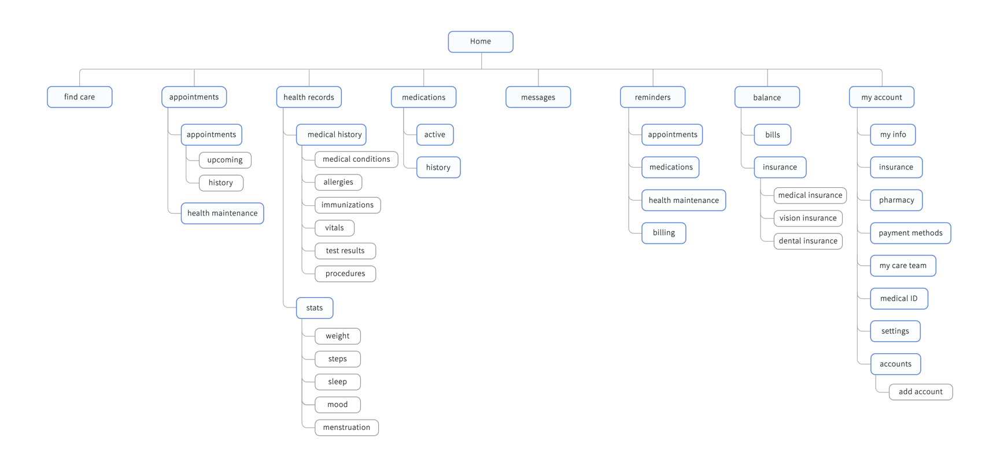

1. the challenge
how might we make managing our healthcare needs easy and intuitive?
project deliverables
user research
problem statement
information architecture
user flow
wireframes
prototype
2. user research
areas of user research
importance of staying up-to-date on yearly exams
process of finding doctors
methods of filing and storing medical history
tracking (or not tracking) personal health
methods of communication with doctors and pharmacy
management and payment of medical bills
3. dismantling research findings
user preferences
reminders for annual and scheduled appointments
searching and booking doctors online
asking friends and family for doctor referrals
receiving notifications and test results online
refilling prescriptions online
pain points
long wait times during appointments
lack of availability for appointments
difficulty understanding insurance plan and status
communicating with doctors and pharmacy by phone
difficulty exchanging records amongst doctors
heavy paperwork for check-ins and results
unknown wait times for medical bills, and bills arriving in the mail
4. feature prioritization
what features will have the highest and lowest impacts? what features will require the most and least effort?
 feature prioritization
feature prioritization
5. information architecture
what is the layout and structure of all navigation and information?

6. user flow
user flow
7. wireframe
 high fidelity wireframe
high fidelity wireframe
8. final prototype

view the whole flow
*warning: it's huge